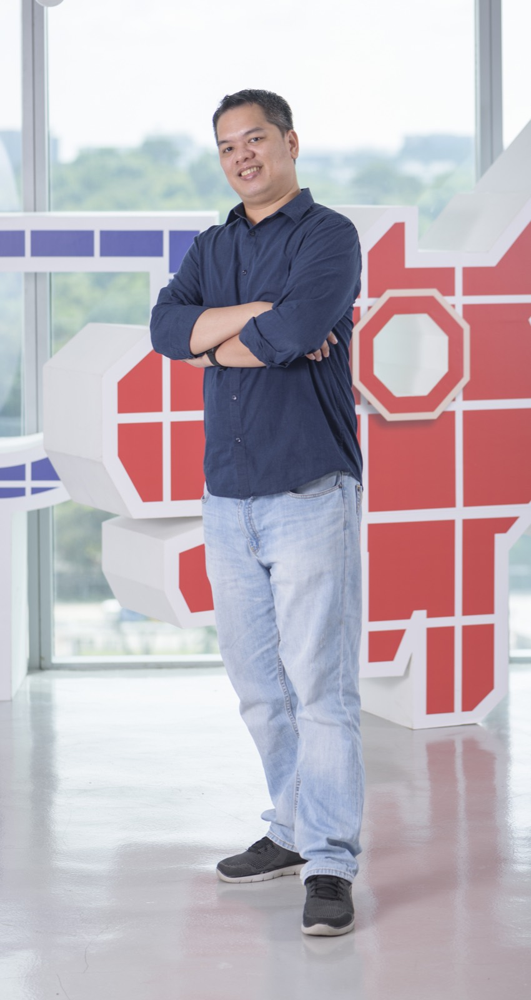

Lester Soriano
Staff Software Engineer
Hi, I'm Lester - a Staff Software Engineer based in Singapore with nearly 20 years building the systems behind payments, fintech, and digital commerce. I've worked across online banking, payment gateways, wallets, remittance, and voucher platforms, including stints at Security Bank, MatchMove, Red Dot Payment, and NTUC Enterprise Nexus. These days I focus on Go microservices on GCP and AWS, reliable APIs, and helping teams ship calmly. If you're looking for someone who can dig into architecture, stay hands-on, and keep delivery moving, I'd love to talk.
